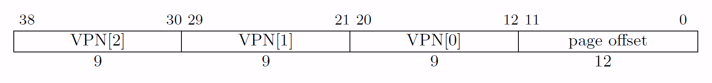
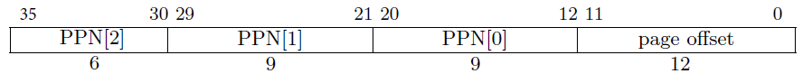
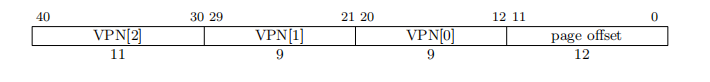
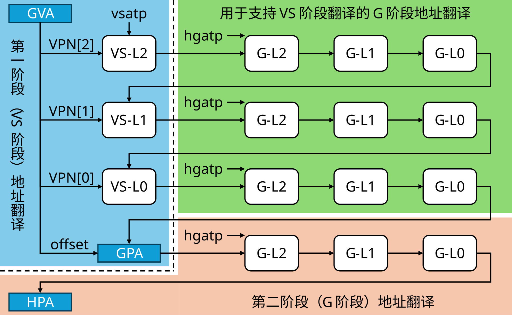
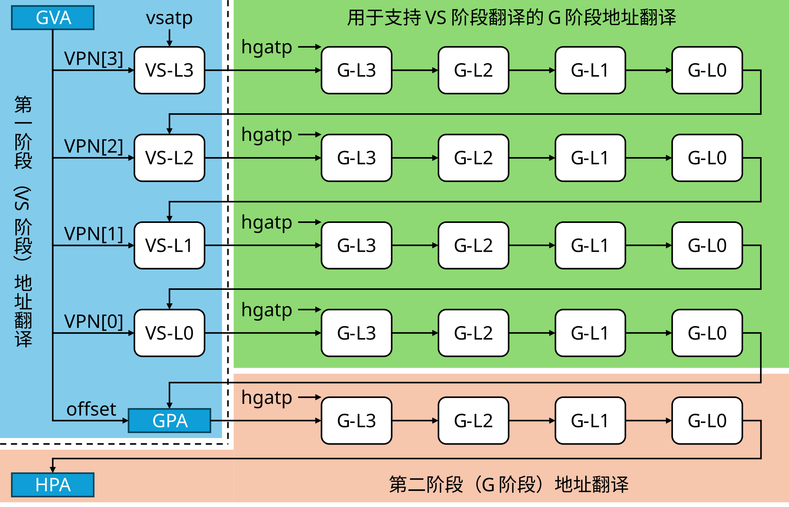
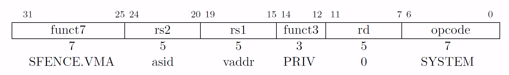
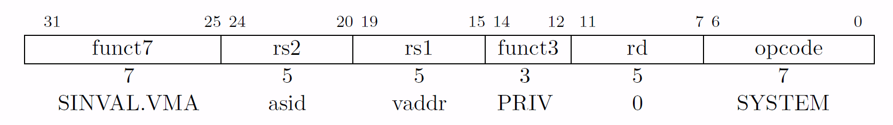
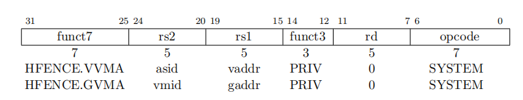
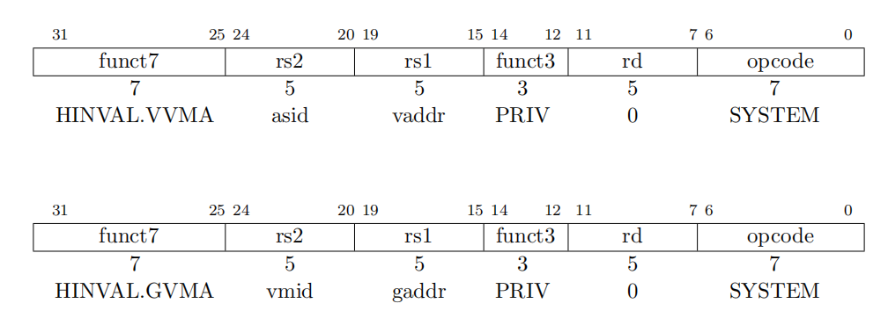
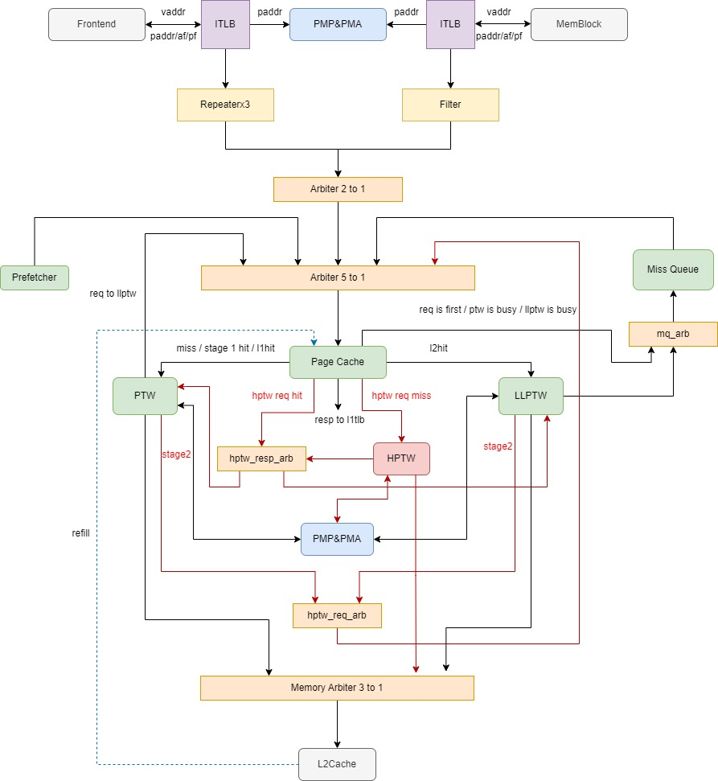

メモリ管理ユニット概要
用語説明
| 略語 | 正式名称 | 説明 |
|---|---|---|
| MMU | Memory Management Unit | メモリ管理ユニット |
| TLB | Translation Lookaside Buffer | ページテーブルのキャッシュ |
| ITLB | Instruction TLB | 命令ページテーブルキャッシュ |
| DTLB | Data TLB | データページテーブルキャッシュ |
| L1 TLB | Level 1 TLB | 1次TLB |
| L2 TLB | Level 2 TLB | 2次TLB |
| SV39 | Page-Based 39-bit Virtual-Memory System | RISC-Vマニュアルで規定されているページングメカニズム |
| PGD | Page Global Directory | ページグローバルディレクトリ |
| PMD | Page Mid-level Directory | ページ中間ディレクトリ |
| PTE | Page Table Entry | ページテーブルエントリ |
| PTW | Page Table Walk | ページテーブルウォークプロセス |
| PMP | Physical Memory Protection | 物理メモリ保護 |
| PMA | Physical Memory Attributes | 物理アドレス属性 |
| ASID | Address Space IDentifier | アドレス空間識別子 |
| CSR | Control and Status Register | 制御およびステータスレジスタ |
| VPN | Virtual Page Number | 仮想ページ番号 |
| PPN | Physical Page Number | 物理ページ番号 |
| PLRU | Pseudo-Least Recently Used | 擬似最近傍アルゴリズム |
| VMID | Virtual Machine Identifier | 仮想マシン番号 |
| GVPN | Guest Virtual Page Number | 第2段階変換の仮想ページ番号（ゲスト物理アドレス） |
| VS-Stage | Virtual Superior Stage | 第1段階変換 |
| G-Stage | Guest Stage | 第2段階変換 |
| SV39x4 | A Variation on Page-Based 39-bit Virtual-Memory System | アドレスを2ビット拡張したSV39、ルートページテーブルは16KB |
| HPTW | Hypervisor Page Table Walker | 第2段階変換を担当するページテーブルウォーカー |
| GPA | Guest Physical Address | ゲスト物理アドレス |
設計仕様
MMUモジュールの全体的な設計仕様は以下の通りです。
- 仮想アドレスから物理アドレスへの変換をサポート
- Sv39ページングメカニズムをサポート
- メモリ内のページテーブルへのアクセスをサポート
- 動的、静的PMPチェックをサポート
- 動的、静的PMAチェックをサポート
- asidをサポート
- Sfence.vmaをサポート
- ソフトウェアによるA/Dビットの更新をサポート
- H拡張の2段階アドレス変換をサポート
- Sv39x4ページングメカニズムをサポート
- vmidをサポート
- hfence.vvmaとhfence.gvmaをサポート
機能説明
香山のMMUモジュールは、L1 TLB、Repeater、L2 TLB、PMP、PMAモジュールで構成され、そのうちL2TLBモジュールはPage Cache、Page Table Walker、Last Level Page Table Walker、Miss Queue、Prefetcherの5つの部分に分かれています。コア内でメモリの読み書きを行う場合、フロントエンドの命令フェッチとバックエンドのメモリアクセスを含め、すべてMMUモジュールによるアドレス変換が必要です。フロントエンドの命令フェッチとバックエンドのメモリアクセスは、それぞれITLBとDTLBを介してアドレス変換を行い、いずれもノンブロッキングアクセスです。TLBはリクエストがミスしたかどうかを返し、リクエスト元に通知し、リクエスト元がTLB検索リクエストを再送するようスケジューリングし、ヒットするまで繰り返します。ミスしたLoadリクエストに対して、昆明湖アーキテクチャはTLB Hintをサポートしています。つまり、L2 TLBがページテーブルをL1 TLBにリフィルする際、その仮想アドレスのTLBミスによってブロックされていたLoad命令を正確にウェイクアップできます。L1 TLB（ITLBとDTLB）でミスが発生した場合、L2 TLBにアクセスします。L2 TLBでもミスした場合、Page Table Walkerを介してメモリ内のページテーブルにアクセスします。
RepeaterはL1 TLBからL2 TLBへのリクエストバッファであり、L1 TLBとL2 TLBの間に長い物理的距離があるため、Repeaterを介して中間にパイプラインステージを追加する必要があります。ITLBとDTLBはどちらも複数のoutstandingなリクエストをサポートしているため、repeaterはMSHRのような機能を同時に担い、重複リクエストをフィルタリングします。MMUモジュールは物理メモリアクセスの権限チェックをサポートしており、PMPとPMAの2つの部分に分かれています。PMPとPMAのチェックは並行して行われ、いずれかの権限に違反すると不正な操作となります。コア内のすべての物理メモリアクセスは、ITLBとDTLBのチェック後、およびPage Table Walkerのメモリアクセス前に、物理アドレスの権限チェックを行う必要があります。
H拡張を追加した後、L2TLB内にHypervisor Page Table Walkerモジュールが新設され、主に第2段階の変換を担当し、L2TLBのアーキテクチャも一部変更されました。
Sv39ページングメカニズムをサポートし、仮想アドレスを物理アドレスに変換する
プロセスの分離を実現するために、各プロセスは独自のアドレス空間を持ち、使用するアドレスはすべて仮想アドレスです。MMUは仮想アドレスを物理アドレスに変換し、変換された物理アドレスを使用してメモリアクセスを行います。香山プロセッサ昆明湖アーキテクチャはSv39ページングメカニズム（RISC-V特権レベルマニュアル参照）をサポートしており、仮想アドレス長は39ビット、下位12ビットはページ内オフセット、上位27ビットは3つのセグメント（各9ビット）に分かれており、つまり3レベルのページテーブルです。昆明湖アーキテクチャの物理アドレスは36ビットで、仮想アドレスと物理アドレスの構造は此图、此图に示されています。ページテーブルを走査するには3回のメモリアクセスが必要なため、TLBを使用してページテーブルをキャッシュする必要があります。


アドレス変換時、フロントエンドの命令フェッチはITLBを介してアドレス変換を行い、バックエンドのメモリアクセスはDTLBを介してアドレス変換を行います。ITLBとDTLBがミスした場合、Repeaterを介してL2 TLBにリクエストを送信します。現在の設計では、フロントエンドの命令フェッチとバックエンドのメモリアクセスはTLBに対してノンブロッキングアクセスを採用しており、つまりリクエストがミスすると、リクエストミスの情報が返され、リクエスト元がTLB検索リクエストを再送するようスケジューリングし、ヒットするまで繰り返します。
同時に、メモリアクセスには2つのLoadパイプライン、2つのStoreパイプライン、およびSMSプリフェッチャ、L1 Load stream & strideプリフェッチャがあります。多数のリクエストに対応するため、2つのLoadパイプラインとL1 Load stream & strideプリフェッチャはLoad DTLBを使用し、2つのStoreパイプラインはStore DTLBを使用し、プリフェッチリクエストはPrefetch DTLBを使用し、合計3つのDTLBがあります。
TLB内に重複エントリが出現するのを避けるため、ITLB repeaterとDTLB repeaterはそれぞれITLBとDTLBからのリクエストを受け取り、重複リクエストをフィルタリングしてからL2 TLBに送信する必要があります。L2 TLBでミスが発生した場合、Hardware Page Table Walkerを使用してメモリ内のページテーブルの内容にアクセスします。ページテーブルの内容を取得した後、Repeaterに返され、最終的にITLBとDTLBに返されます。（ 全体設計参照）
仮想化のための2段階アドレス変換をサポート
H拡張が追加された後、非仮想化モードで仮想化メモリアクセス命令を実行していない場合、アドレス変換プロセスはH拡張が追加される前とほぼ同じです。仮想化モードまたは仮想化メモリアクセス命令を実行する場合、vsatpとhgatpに基づいて2段階の変換を開始するかどうかを判断します。つまり、VS-stageとG-stageです。VS-stageはゲスト仮想アドレスをゲスト物理アドレスに変換し、G-stageはゲスト物理アドレスをホスト物理アドレスに変換します。第1段階の変換は非仮想化の変換プロセスとほぼ同じで、第2段階の変換はPTWとLLPTWモジュールで行われます。検索ロジックは次のとおりです。まずPage Cacheで検索し、見つかった場合はPTWまたはLLPTWに返し、見つからない場合はHPTWに送って変換し、HPTWが結果を返してPage Cacheに書き込みます。
G-stageでは、ページングメカニズムはSv39x4と呼ばれ、このモードでの仮想アドレスは41ビットで、ルートページテーブルは16KBになります。

2段階アドレス変換では、第1段階で変換されたアドレス（変換過程で計算されたページテーブルアドレスを含む）はすべてゲスト物理アドレスであり、実際の物理アドレスを取得するために第2段階の変換を行ってからメモリアクセスしてページテーブルを読み取る必要があります。論理的な変換プロセスは此图、此图に示されています。


メモリ内のページテーブルの内容へのアクセスをサポート
L1 TLBがL2 TLBにリクエストを送信する際、まずPage Cacheにアクセスします。2段階変換でないリクエストの場合、リーフノードにヒットすれば直接L1 TLBに返しますが、そうでない場合はPage CacheでヒットしたページテーブルのレベルとPage Table WalkerおよびLast Level Page Table Walkerの空き状況に応じて、Page Table Walker、Last Level Page Table Walker、またはMiss Queueに入ります（5.3節参照）。2段階アドレス変換のリクエストの場合、Page Cacheは一度に1つの検索リクエストしか処理できないため、2段階アドレス変換リクエストはPage Cacheでまず第1段階のページテーブルを検索します。第1段階でヒットした場合、リクエストはPage Table Walkerに送られ、Page Table Walkerで第2段階の変換が行われます。第1段階でヒットしなかった場合、ヒットしたページテーブルのレベルに応じて、Page Table WalkerまたはLast Level Page Table Walkerに送られ、これらのモジュールで第2段階の変換が行われます。Page Table WalkerとLast Level Page Table Walkerが送信する第2段階アドレス変換のリクエストは、まずPage Cacheに送られて検索されます。ヒットした場合、Page Cacheは直接結果を対応するモジュールに返します。ヒットしなかった場合、Hypervisor Page Table Walkerに送られて変換され、変換結果は直接Page Table WalkerまたはLast Level Page Table Walkerに返されます。Page Table Walkerは同時に1つのリクエストしか処理できず、Hardware Page Table Walkを行います。Page Table Walkerはメモリ内の最初の2レベルのページテーブルの内容にアクセスでき、4KBページテーブルにはアクセスしません。Page Table Walkerが2MBまたは1GBのリーフノードにアクセスした場合、またはPage faultまたはAccess faultが発生した場合、L1 TLBに返されます。そうでない場合は、Last Level Page Table Walkerに送られてメモリ内の最後のレベル（4KB）のページテーブルにアクセスします。Hypervisor Page Table Walkerは一度に1つのリクエストしか処理できないため、Last Level Page Table Walkerでの第2段階変換のリクエストはシリアルに送信されます。Hypervisor Page Table WalkerのアクセスはPage faultまたはAccess faultをトリガーする可能性があり、PTWまたはLLPTWに返され、PTWまたはLLPTWはL1TLBに返します。
Page Table WalkerとLast Level Page Table Walker、および新しく追加されたHypervisor Page Table Walkerは、すべてメモリにリクエストを送信してページテーブルの内容にアクセスできます。物理アドレスを使用してメモリ内のページテーブルの内容にアクセスする前に、PMPおよびPMAモジュールを介して物理アドレスをチェックする必要があります（3.2.3および5.4節参照）。access faultが発生した場合、メモリにリクエストは送信されません。Page Table Walker、Last Level Page Table Walker、Hypervisor Page Table Walkerからのリクエストは、調停後、TileLinkバスを介してL2 Cacheにリクエストを送信します。L2 Cacheのメモリアクセス幅は512ビットであるため、毎回8つのページテーブルエントリが返されます。
昆明湖のMMUはページテーブル圧縮メカニズムを実装しており、連続したページテーブルエントリを圧縮します。具体的には、仮想ページ番号の上位ビットが同じページテーブルエントリについて、これらのページテーブルエントリの物理ページ番号の上位ビットとページテーブル属性も同じ場合、これらのページテーブルエントリを1つのエントリに圧縮して保存でき、これによりTLBの有効容量が向上します。したがって、L2 TLBが4KBページにヒットした場合、最大8つの連続したページテーブルエントリが返されます（5.2節のL2 TLBの対応する説明を参照）。H拡張では、L1TLBの仮想化拡張に関連するページテーブル圧縮メカニズムは無効化され、1つのページテーブルと見なされます。L2TLBの仮想化拡張に関連するページテーブルは、引き続きページテーブル圧縮メカニズムを採用します。
物理メモリアクセスの権限チェックをサポート
香山はPMPとPMAチェックをサポートしており、PMPとPMAチェックは並行して行われ、いずれかの権限に違反すると不正な操作となります。PMPとPMAの具体的な実装は、CSR Unit、Frontend、Memblock、L2 TLBの4つの部分に分かれています。昆明湖アーキテクチャでは、PMPとPMAはどちらも16エントリです。PMPとPMAレジスタのアドレス空間と設定レジスタの説明については、5.4節を参照してください。
CSR Unitは、CSRRWなどのCSR命令によるこれらのPMPおよびPMAレジスタの読み書きに応答します。Frontend、Memblock、L2 TLBには、これらのPMPおよびPMAレジスタのバックアップが含まれており、アドレスチェックを担当します。CSRの書き込み信号をプルすることで、これらのレジスタの内容の一貫性を保証できます。L1 TLBの面積は比較的小さいため、PMPおよびPMAレジスタのバックアップはFrontendまたはMemblockに格納され、それぞれITLBとDTLBにチェックを提供します。L2 TLBの面積は比較的大きいため、PMPおよびPMAレジスタのバックアップは直接L2 TLBに格納されます。
ITLBとDTLBの検索結果が得られた後、およびL2 TLBで物理アドレスを使用してメモリアクセスする前に、PMPとPMAのチェックを行う必要があります。マニュアルの規定によれば、PMPとPMAのチェックは動的チェックである必要があります。つまり、TLB変換後、変換された物理アドレスを使用して物理アドレスの権限チェックを行う必要があります。タイミングを考慮して、DTLBのPMP & PMAチェック結果は事前に検索しておき、リフィル時にTLBエントリに格納することができます。これが静的チェックです。具体的には、L2 TLBのページテーブルエントリがDTLBにリフィルされる際、同時にリフィルされるページテーブルエントリをPMPとPMAに送って権限チェックを行い、チェックで得られた属性ビット（R、W、X、C、Atomicを含む。これらの属性ビットの具体的な意味は5.4節参照）を同時にDTLBに格納します。これにより、これらのチェック結果を直接MemBlockに返すことができ、再度チェックする必要がありません。静的チェックを実現するには、PMPとPMAの粒度を4KBに上げる必要があります。
注意すべきは、現在PMP & PMAチェックは昆明湖のタイミングボトルネックではないため、静的チェックは採用されておらず、すべて動的チェック方式を使用しています。つまり、TLB検索で物理アドレスを取得した後、再度チェックを行います。昆明湖V1のコードには静的チェックは含まれておらず、動的チェックのみが含まれていますので、再度ご注意ください。ただし、互換性のために、PMPとPMAの粒度は依然として4KBに維持されています。
メモリ管理フェンス命令をサポート
昆明湖 V2R2は、SFENCE.VMA、HFENCE.VVMA、HFENCE.GVMAなどのメモリ管理フェンス命令をサポートしています。
Sfence.vma命令が実行されると、まずStore Bufferのすべての内容がDCacheに書き戻され、その後、MMUの各部分にフラッシュ信号が発行されます。フラッシュ信号は単方向で、1サイクルしか持続せず、リターン信号はありません。Sfence.vma命令は最終的にパイプライン全体をフラッシュし、命令フェッチから再実行します。Sfence.vma命令は、RepeaterとFilter、およびL1TLBとL2 TLBのinflightリクエストを含むすべてのinflightリクエストをキャンセルし、アドレスとASIDに基づいてL1 TLBとL2 TLBにキャッシュされているページテーブルをフラッシュします。Sfence.vma命令のパラメータは此图に示されています。

また、香山昆明湖アーキテクチャはSvinval拡張をサポートしており、Svinval.vma命令のフォーマットは此图に示されています。rs1とrs2の意味はSfence.vma命令と同じです。昆明湖アーキテクチャでは、TLB内部でSvinval.vma命令とSfence.vma命令のロジックは完全に同じであり、TLBは渡されたsfence_valid信号と対応するrs1、rs2パラメータのみを受け入れます。

Hfence命令にはHfence.vvmaとHfence.gvmaがあり、このタイプの命令の実行効果はSfence.vmaに似ています。まずStore Bufferのすべての内容をDCacheに書き戻し、その後MMUの各部分にフラッシュ信号を発行します。フラッシュ信号は単方向で、1サイクルしか持続せず、リターン信号はありません。命令は最終的にパイプライン全体をフラッシュし、命令フェッチから再実行します。命令は、RepeaterとFilter、およびL1TLBとL2 TLBのinflightリクエストを含むすべてのinflightリクエストをキャンセルします。Hfence.vvmaはアドレスとASIDとVMIDに基づいてL1TLBとL2TLBのVSATPに関連するページテーブルをフラッシュし、Hfence.gvmaはアドレスとVMIDに基づいてL1TLBとL2TLBのHGATPに関連するページテーブルをフラッシュします。

また、昆明湖アーキテクチャはSvinval拡張をサポートしているため、対応するhinval.vvmaとhinval.gvma命令があり、これら2つの命令はそれぞれhfenceの2つの命令に対応しています。

ASIDとVMIDをサポート
香山昆明湖アーキテクチャは、長さ16のASID（アドレス空間識別子）をサポートしており、SATPレジスタに保存されます。SATPレジスタのフォーマットは此表に示されています。
| ビット | フィールド | 説明 |
|---|---|---|
| [63:60] | MODE | アドレス変換のモードを示します。このフィールドが0の場合はBare modeで、アドレス変換やアドレス保護は有効になりません。8の場合はSv39アドレス変換モードを示し、その他の値の場合はillegal instruction faultを報告します。 |
| [59:44] | ASID | アドレス空間識別子。ASIDの長さはパラメータ化可能で、香山昆明湖アーキテクチャで採用されているSv39アドレス変換モードでは、ASIDの最大長は16です。 |
| [43:0] | PPN | ルートページテーブルの物理ページ番号を示し、物理アドレスを12ビット右シフトして得られます。 |
注意：仮想化モードでは、SATPはVSATPレジスタに置き換えられ、その中のPPNはゲストのルートページテーブルのゲスト物理ページ番号であり、実際の物理アドレスではありません。実際の物理アドレスを取得するには、第2段階の変換を行う必要があります。
香山昆明湖アーキテクチャは、長さ14のVMID（仮想マシン識別子）をサポートしており、HGATPレジスタに保存されます。HGATPレジスタのフォーマットは此表に示されています。
| ビット | フィールド | 説明 |
|---|---|---|
| [63:60] | MODE | アドレス変換のモードを示します。このフィールドが0の場合はBare modeで、アドレス変換やアドレス保護は有効になりません。8の場合はSv39x4アドレス変換モードを示し、その他の値の場合はillegal instruction faultを報告します。 |
| [57:44] | VMID | 仮想マシン識別子。香山昆明湖アーキテクチャで採用されているSv39x4アドレス変換モードでは、VMIDの最大長は14です。 |
| [43:0] | PPN | 第2段階変換のルートページテーブルの物理ページ番号を示し、物理アドレスを12ビット右シフトして得られます。 |
ソフトウェアによるA/Dビットの更新をサポート
香山は、ソフトウェアによるページテーブルのA/Dビットの管理をサポートしています。Aビットは、最後にAビットがクリアされてから、そのページに対して読み取り、書き込み、または命令フェッチ操作が行われたことを示します。Dビットは、最後にDビットがクリアされてから、そのページに対して書き込み操作が行われたことを示します。マニュアルでは、ソフトウェアとハードウェアの2つの方法でA/Dビットを更新することが許可されていますが、香山はソフトウェア方式を選択しています。つまり、以下の2つの状況が発見された場合、ページフォールトを報告し、ソフトウェアでページテーブルを更新します。
- あるページにアクセスしたが、そのページのページテーブルのAビットが0である
- あるページに書き込みを行ったが、そのページのページテーブルのDビットが0である
注意：現在、香山昆明湖アーキテクチャはハードウェアによるA/Dビットの更新をサポートしていません。
例外処理メカニズムをサポート
PMP、PMAチェックでaccess faultが報告された場合、またはpage fault、guest page faultなどが発生した場合、TLBモジュールはPTWリクエストのソースに応じて、ITLBはFrontendに例外を返し、DTLBはMemblockに例外を返します。TLBモジュールがFrontendとMemblockに返す可能性のある例外の種類は表3.3に示されています。MemblockはさらにLoadUnit、AtomicsUnit、StoreUnitに細分化できます。TLBモジュールは、FrontendまたはMemblockにaccess fault、page fault、またはguest page faultを返すだけで、その後の処理はFrontendまたはMemblockが行います。例外処理の概要と説明については、 例外処理メカニズムを参照してください。
| 種類 | 目的 | 説明 |
|---|---|---|
| pf_instr | Frontend | inst page faultが発生したことを示します |
| af_instr | Frontend | inst access faultが発生したことを示します |
| gpf_instr | Frontend | inst guest page faultが発生したことを示します |
| pf_ld | LoadUnitまたはAtomicsUnit | load page faultが発生したことを示します |
| af_ld | LoadUnitまたはAtomicsUnit | load access faultが発生したことを示します |
| gpf_ld | LoadUnitまたはAtomicsUnit | load guest page faultが発生したことを示します |
| pf_st | StoreUnitまたはAtomicsUnit | store page faultが発生したことを示します |
| af_st | StoreUnitまたはAtomicsUnit | store access faultが発生したことを示します |
| gpf_st | StoreUnitまたはAtomicsUnit | store guest page faultが発生したことを示します |
例外処理メカニズム
MMUモジュールで発生する可能性のある例外には、guest page fault、page fault、access fault、およびL2 TLB Page CacheのECCチェックエラーが含まれます。ITLB、DTLB、L2 TLBはすべて、guest page fault、page fault、access faultを発生させる可能性があります。ITLBとDTLBで発生した例外は、リクエスト元に応じて、物理アドレス検索を送信したモジュールに処理が委ねられます。ITLBはIcacheまたはIFUに、DTLBはLoadUnits、StoreUnits、またはAtomicsUnitに処理を委ねます。
L2 TLBでguest page fault、page fault、またはaccess faultが発生した場合、L2 TLBは直接例外を処理せず、その情報をL1 TLBに返します。L1 TLBは、検索でguest page fault、page fault、またはaccess faultが発見された後、リクエストのcmdに応じて異なる種類の例外を生成し、リクエスト元に応じて各モジュールに処理を委ねます。
L2 TLBのPage CacheはECCチェックをサポートしており、ECCチェックでエラーが報告された場合、例外は報告されず、代わりにL2 TLBにそのリクエストのミス信号が送信されます。同時に、Page CacheはECCエラーのあったエントリをフラッシュし、PTWリクエストを再送してPage Walkを再度行います。
つまり、MMUモジュールはL2 TLBのPage CacheのECCチェックエラー例外のみを処理し、発生したpage faultとaccess faultはすべてフロントエンドまたはバックエンドのパイプラインに処理を委ねます。
発生する可能性のある例外とMMUモジュールの処理フローは此表に示されています。
| モジュール | 発生する可能性のある例外 | 処理フロー |
|---|---|---|
| ITLB | ||
| inst page faultが発生 | リクエスト元に応じて、IcacheまたはIFUに処理を委ねる | |
| inst guest page faultが発生 | リクエスト元に応じて、IcacheまたはIFUに処理を委ねる | |
| inst access faultが発生 | リクエスト元に応じて、IcacheまたはIFUに処理を委ねる | |
| DTLB | ||
| load page faultが発生 | LoadUnitsに処理を委ねる | |
| load guest page faultが発生 | LoadUnitsに処理を委ねる | |
| store page faultが発生 | リクエスト元に応じて、StoreUnitsまたはAtomicsUnitに処理を委ねる | |
| store guest page faultが発生 | リクエスト元に応じて、StoreUnitsまたはAtomicsUnitに処理を委ねる | |
| load access faultが発生 | LoadUnitsに処理を委ねる | |
| store access faultが発生 | リクエスト元に応じて、StoreUnitsまたはAtomicsUnitに処理を委ねる | |
| L2 TLB | ||
| guest page faultが発生 | L1 TLBに委ね、L1 TLBがリクエスト元に応じて処理を委ねる | |
| page faultが発生 | L1 TLBに委ね、L1 TLBがリクエスト元に応じて処理を委ねる | |
| access faultが発生 | L1 TLBに委ね、L1 TLBがリクエスト元に応じて処理を委ねる | |
| ECCチェックエラー | 現在のエントリを無効にし、ミス結果を返してPage Walkを再実行する |
全体設計
MMUの全体アーキテクチャは此图に示されています。

ITLBはFrontendからのPTWリクエストを受け取り、DTLBはMemblockからのPTWリクエストを受け取ります。FrontendからのPTWリクエストには、ICacheの3つのリクエストとIFUの1つのリクエストが含まれます。MemblockからのPTWリクエストには、LoadUnitの2つのリクエスト（AtomicsUnitがLoadUnitの1つのリクエストチャネルを占有）、L1 Load stream & strideプリフェッチャの1つのリクエスト、StoreUnitの2つのリクエスト、およびSMSPrefetcherの1つのリクエストが含まれます。ITLB、DTLBはRepeaterを介してL2 TLBに接続されており、いずれもノンブロッキングアクセスです。これらのRepeaterは、パイプラインステージを追加する機能に加えて、重複リクエストをフィルタリングする機能も備えており、L1 TLBからL2 TLBに送信される重複リクエストをフィルタリングして、L1 TLBに重複エントリが出現するのを防ぎます。
ITLBのリクエストとDTLBのリクエストは調停（Arbiter 2to1）を経て、まずPage Cacheにアクセスします。2段階アドレス変換でないリクエストの場合、リーフノードにヒットすれば直接L1 TLBに返され、ヒットしなければPage CacheでヒットしたページテーブルのレベルとPage Table WalkerおよびLast Level Page Table Walkerの空き状況に応じて、Page Table Walker、Last Level Page Table Walker、またはMiss Queueに入ります（5.3節参照）。Miss Queue、Prefetcherからのリクエストは、アービタ（Arbiter 3to1）を介してL1 TLBからのリクエストと一緒に調停され、再度Page Cacheにアクセスします。もう1つのケースとして、Page Cacheが2段階アドレス変換リクエストを受け取った場合、2段階変換が両方とも有効な場合、第1段階のページテーブルにヒットすればPTWに送られて第2段階の変換が行われます。その他の場合は、第1段階のページテーブルのヒットレベルとPTWおよびLLPTWの空き状況に応じて、PTW、LLPTW、Miss Queueに送られます。第1段階の変換のみの場合、非2段階アドレス変換リクエストの処理と同様に、ヒットレベルとPTWおよびLLPTWの空き状況に応じてPTW、LLPTW、Miss Queueに送られます。第2段階の変換のみの場合、検索で見つかればL1TLBに返され、見つからなければPTWに送られて第2段階の変換が行われます。さらに、Page CacheはisHptwReqが有効なリクエストも受け取ります。これは、そのリクエストが第2段階の変換を行うリクエストであることを示します。このタイプのリクエストがPage Cacheでヒットした場合、hptw_resp_arbに送られます。ヒットしなかった場合、HPTWに送られて検索され、HPTWは検索結果をhptw_resp_arbに送ります。
Page Table WalkerとLast Level Page Table Walkerはどちらも第2段階のアドレス変換を行うことができ、PTWとLLPTWでは、2段階アドレス変換リクエストの場合、PTWまたはLLPTWがPTEから取得するアドレスはすべてゲスト物理アドレスであり、メモリアクセス前に第2段階のアドレス変換を行って実際の物理アドレスを取得する必要があります。PTWおよびLLPTWモジュールの紹介を参照してください。
Page Table WalkerとLast Level Page Table Walkerはどちらもメモリにリクエストを送信して、メモリ内のページテーブルの内容にアクセスできます。物理アドレスを使用してメモリ内のページテーブルの内容にアクセスする前に、PMPおよびPMAモジュールを介して物理アドレスをチェックする必要があり、access faultが発生した場合はメモリにリクエストは送信されません。Page Table WalkerとLast Level Page Table Walkerからのリクエストは、調停後（Memory Arbiter 2to1）、TileLinkバスを介してL2 Cacheにリクエストを送信します。L2 TLBは、L2 Cacheに物理アドレスを送信するだけでなく、idを使用してリクエストのソースを示す必要もあります。L2 Cacheのメモリアクセス幅は512ビットであるため、毎回8つのページテーブルエントリが返されます。メモリアクセスごとに返されるページテーブルは、Page Cacheにリフィルされます。
ITLBとDTLBの検索結果が得られた後、およびL2 TLBがPage Table Walkerを行う前に、PMPとPMAのチェックを行う必要があります。L1 TLBの面積は比較的小さいため、PMPとPMAレジスタのバックアップはL1 TLB内部には格納されず、FrontendまたはMemblockに格納され、それぞれITLBとDTLBにチェックを提供します。L2 TLBの面積は比較的大きく、PMPとPMAレジスタのバックアップは直接L2 TLBに格納されます。
インターフェースリスト
MMUモジュールの各部分と上位モジュールのインターフェースリストは此表に示されています。
| 上位モジュール | モジュール名 | インスタンス名 | 説明 |
|---|---|---|---|
| Frontend | |||
| TLB | itlb | ITLB、5.1節で紹介 | |
| PMP | pmp | 分散PMPレジスタ、5.4節で紹介 | |
| PMPChecker | PMPChecker | PMPチェッカー、5.4節で紹介 | |
| PMPChecker | PMPChecker_1 | PMPチェッカー、5.4節で紹介 | |
| PMPChecker | PMPChecker_2 | PMPチェッカー、5.4節で紹介 | |
| PMPChecker | PMPChecker_3 | PMPチェッカー、5.4節で紹介 | |
| PTWFilter | itlbRepeater1 | ITLBとL2 TLBを接続するRepeater1、5.2節で紹介 | |
| PTWRepeaterNB | itlbRepeater2 | ITLBとL2 TLBを接続するRepeater2、5.2節で紹介 | |
| MemBlock | |||
| TLBNonBlock | dtlb_ld_tlb_ld | Load DTLB、5.1節で紹介 | |
| TLBNonBlock_1 | dtlb_ld_tlb_st | Store DTLB、5.1節で紹介 | |
| TLBNonBlock_2 | dtlb_prefetch_tlb_prefetch | Prefetch DTLB、5.1節で紹介 | |
| PTWNewFilter | dtlbRepeater | DTLBとL2 TLBを接続するRepeater1、5.2節で紹介 | |
| PTWRepeaterNB | itlbRepeater3 | ITLBとL2 TLBを接続するRepeater3、5.2節で紹介 | |
| PMP_2 | pmp | 分散PMPレジスタ、5.4節で紹介 | |
| PMPChecker_8 | PMPChecker | PMPチェッカー、5.4節で紹介 | |
| PMPChecker_8 | PMPChecker_1 | PMPチェッカー、5.4節で紹介 | |
| PMPChecker_8 | PMPChecker_2 | PMPチェッカー、5.4節で紹介 | |
| PMPChecker_8 | PMPChecker_3 | PMPチェッカー、5.4節で紹介 | |
| PMPChecker_8 | PMPChecker_4 | PMPチェッカー、5.4節で紹介 | |
| PMPChecker_8 | PMPChecker_5 | PMPチェッカー、5.4節で紹介 | |
| L2TLBWrapper | ptw | L2 TLB、5.3節で紹介 | |
| TLBuffer_20 | ptw_to_l2_buffer | L2 TLBとL2 Cache間のバッファ、5.3節で紹介 |
L2 TLBモジュールの各部分とL2 TLBのインターフェースリスト
| 上位モジュール | モジュール名 | インスタンス名 | 説明 |
|---|---|---|---|
| L2TLBWrapper | |||
| L2TLB | ptw | L2 TLB、5.3節で紹介 | |
| L2TLB | |||
| PMP | pmp | 分散PMPレジスタ、5.4節で紹介 | |
| PMPChecker | PMPChecker | PMPチェッカー、5.4節で紹介 | |
| PMPChecker | PMPChecker_1 | PMPチェッカー、5.4節で紹介 | |
| L2TlbMissQueue | missQueue | L2 TLB Miss Queue、5.3.11節で紹介 | |
| PtwCache | cache | L2 TLB Page Table Cache、5.3.7節で紹介 | |
| PTW | ptw | L2 TLB Page Table Walker、5.3.8節で紹介 | |
| LLPTW | llptw | L2 TLB Last Level Page Table Walker、5.3.9節で紹介 | |
| HPTW | hptw | L2 TLB Hypervisor Page Table Walker、5.3.10節で紹介 | |
| L2TlbPrefetch | prefetch | L2 TLB Prefetcher、5.3.12節で紹介 |
詳細はインターフェースリストドキュメントを参照してください。また、一部のアービタはインターフェースリストから省略されています。
インターフェースタイミング
MMU全体と外部とのインターフェースは、L1 TLBとFrontend、Memblockのインターフェース、およびL2 TLBとメモリ（L2 Cache）間のインターフェースに関係します。
L1 TLBとFrontend、Memblock間のインターフェースタイミングについては、 ITLBとFrontendのインターフェースタイミング、 DTLBとMemblockのインターフェースタイミングを参照してください。
L2 TLBとL2 Cacheのインターフェースタイミングは、TileLinkバスプロトコルに従います。